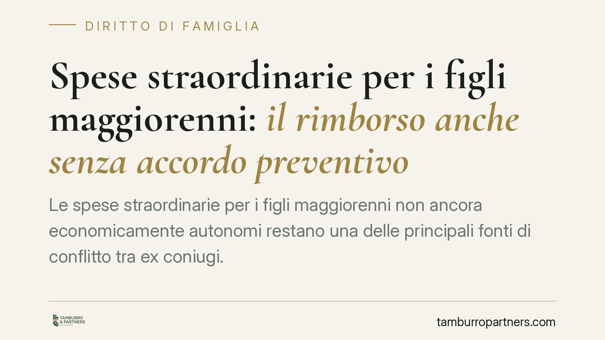

Spese straordinarie per i figli maggiorenni: il rimborso anche senza accordo preventivo
Le spese straordinarie per i figli maggiorenni non ancora economicamente autonomi restano una delle principali fonti di conflitto tra ex coniugi. Il nodo ricorrente è se il genitore collocatario possa chiederne il rimborso anche quando la decisione di spesa non è stata concordata. La risposta dipende dalla natura della spesa e dall'interesse del ragazzo. Vediamo il quadro.

Il problema: spese decise da un solo genitore
Dopo la separazione, l'assegno di mantenimento copre le spese ordinarie: vitto, abbigliamento corrente, costi ricorrenti della vita quotidiana. Restano fuori le cosiddette spese straordinarie: interventi medici non programmabili, cicli di cure specialistiche, rette universitarie, attività formative rilevanti.
Su queste ultime nasce il contenzioso. Un genitore sostiene una spesa importante per il figlio; l'altro rifiuta il rimborso perché non era stato interpellato prima. La questione si complica quando il figlio è maggiorenne ma non ancora in grado di provvedere a sé.
Inquadramento normativo
L'obbligo di mantenimento non cessa con la maggiore età. Gli articoli 147 e 148 del Codice civile fissano il dovere di entrambi i genitori di mantenere, istruire ed educare i figli, in proporzione alle rispettive sostanze e capacità.
Per i figli divenuti maggiorenni ma non economicamente indipendenti interviene l'art. 337-septies c.c., che consente al giudice di disporre un assegno a loro favore fino al raggiungimento dell'autonomia. L'art. 337-ter c.c. detta invece i criteri sulla ripartizione dei costi e sull'esercizio della responsabilità genitoriale, prevedendo di regola la concertazione delle decisioni di maggiore interesse.
Da qui due principi che possono sembrare in tensione:
- da un lato, l'onere di concertazione: le decisioni importanti vanno condivise;
- dall'altro, il preminente interesse del figlio, che resta il criterio-guida di ogni valutazione.
Concertazione sì, ma non come veto
La giurisprudenza di legittimità ha più volte chiarito che l'obbligo di preventivo accordo non è assoluto. L'onere di concertazione riguarda le scelte discrezionali e rinviabili, non quelle necessarie, urgenti o comunque rispondenti a un interesse evidente del figlio.
In altri termini: se la spesa risponde a un bisogno obiettivo del ragazzo — una cura indifferibile, la prosecuzione di un percorso di studi già avviato, un intervento sanitario necessario — il mancato accordo preventivo non esonera di per sé l'altro genitore dal concorso proporzionale al costo. Diversamente, trasformare la concertazione in un potere di veto finirebbe per penalizzare proprio il figlio che la norma intende tutelare.
Resta invece più esposta al rifiuto la spesa puramente discrezionale, voluttuaria o decisa unilateralmente quando il confronto era possibile e il carattere non urgente avrebbe consentito di attendere.
> Nota di prudenza. Circolano riferimenti a pronunce recenti su questo tema con estremi non verificabili. Sconsigliamo di fondare pretese o difese su massime prive di riscontro ufficiale: il principio va ancorato alla norma e a precedenti controllati nel caso concreto.
Cosa cambia per il genitore collocatario
Per chi anticipa la spesa, la posizione è ragionevolmente solida quando ricorrono due condizioni: la spesa è straordinaria e necessaria, e risponde all'interesse del figlio. La prova, però, pesa su chi chiede il rimborso.
Per l'altro genitore, il rifiuto va motivato: non basta richiamare il mancato accordo se la spesa era obiettivamente giustificata. Al tempo stesso, conserva piena facoltà di contestare spese superflue, sproporzionate o imposte senza alcun confronto evitabile.
Cosa fare in concreto
- Concertate per iscritto ogni spesa rilevante quando è possibile: una mail o un messaggio datato vale più di un accordo verbale.
- Conservate la documentazione completa: preventivi, fatture, prescrizioni mediche, iscrizioni, ricevute di pagamento tracciabile.
- Documentate l'urgenza o la necessità della spesa quando il confronto preventivo non era praticabile.
- Verificate il titolo di riferimento (sentenza, accordo omologato, verbale): spesso contiene già l'elenco delle spese straordinarie e i criteri di ripartizione.
- Agite senza ritardi ingiustificati: accumulare richieste di rimborso per anni indebolisce la posizione e complica la prova.
In caso di contrasto persistente, consigliamo di valutare preventivamente la fondatezza della pretesa con un professionista, prima di avviare un procedimento: la qualificazione della spesa come ordinaria o straordinaria, e come necessaria o discrezionale, è il vero snodo della controversia.
Contributo informativo a cura di Tamburro & Partners Avvocati - Avv. Giuseppe Tamburro. Non costituisce parere legale.
Ogni famiglia ha il suo equilibrio.
Separazione, divorzio, affidamento, assegno: se vuoi un confronto riservato su una specifica situazione, scrivi allo studio. Ti rispondiamo entro un giorno lavorativo.